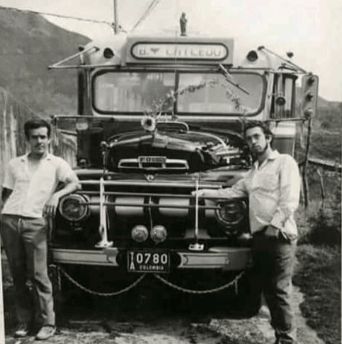
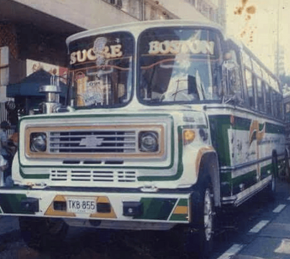

El 25 de julio de 1964, Tomas Vásquez Marín, Samuel Antonio Salazar Buitrago y Francisco Luis Jiménez fundaron la Cooperativa Antioqueña de Transportadores Ltda (Copatra), en Medellín, con el objetivo de organizar y estructurar el servicio de transporte en la ciudad. La cooperativa nació de la necesidad de formalizar el transporte informal en la zona centro-oriental de Medellín, específicamente en la comuna 8.
El primer gerente fue Tomas Vásquez y Samuel Salazar el primer auditor. A lo largo de su historia, Copatra ha mantenido una misión y visión centradas en la comunidad, lo que ha influido en la creación de otras empresas en el sector. En sus inicios, la cooperativa contaba con un equipo pequeño, incluyendo gerentes, secretarios y despachadores, y entre sus primeros asociados se encontraban figuras clave como Otilia Arias de Atehortua y Gerardo Vargas.
Hoy, tras 60 años, Copatra sigue comprometida con la innovación, los valores y el cumplimiento de las normativas del sector transporte, asegurando que los habitantes de la comuna 8 sigan disfrutando de un servicio seguro y de calidad.
Misión

Brindar un servicio de transporte urbano eficiente, adecuado a las necesidades de nuestros usuarios, garantizando la plena satisfacción del usuario, generar la preferencia, y confianza del mismo, proporcionando el mejor servicio de transporte urbano con proyección nacional, de la mano de un talento humano eficiente y tecnologia eficaz en beneficio de los habitantes de la comunidad.
Visión

Que COPATRA sea ejemplo en la ciudad de Medellín, diferente y diferenciable en la prestación de un servicio de transporte urbano de pasajeros con excelencia, a partir de una gestión innovadora, integrando al sector público como actor básico.
Nuestros Valores
En COPATRA, trabajamos bajo los siguientes principios para promover una cultura cooperativa:
Ayuda Mutua
El lema es "uno para todos y todos para uno". Estamos comprometidos con la cooperación mutua.
Igualdad
Todos tenemos los mismos derechos y deberes. Nadie será discriminado.
Equidad
Medimos con el mismo rasero a todos los asociados, fomentando la justicia en todas nuestras acciones.
Solidaridad
Nos apoyamos mutuamente ante las adversidades, buscando siempre el bien común.
Compromiso
Trabajamos con responsabilidad y dedicación, cumpliendo nuestras metas con perseverancia.
Transparencia
Actuamos con claridad y apertura en todos nuestros procesos.
Nuestros Valores
Además de los valores mencionados, promovemos la diversidad y la inclusión en nuestro equipo. Creemos
que el éxito depende de la colaboración de personas con diferentes perspectivas y talentos.
1. Diversidad
Valoramos la diversidad cultural, de género, y de pensamiento en todos los aspectos de nuestra organización. Esto nos permite innovar constantemente y mejorar en lo que hacemos.
2. Inclusión
Nos comprometemos a crear un ambiente inclusivo donde todas las personas se sientan valoradas y respetadas. Esto se refleja tanto en nuestras políticas internas como en nuestras interacciones diarias.
3. Colaboración
El trabajo en equipo es clave para nuestro éxito. Fomentamos un entorno donde todos pueden aportar sus ideas y trabajar juntos para alcanzar metas comunes.
4. Responsabilidad
Cada miembro de nuestra organización es responsable de sus acciones, y juntos, compartimos la responsabilidad de contribuir al bienestar de la sociedad y del medio ambiente.
Impacto Social
Nos importa el impacto que dejamos en la comunidad. A través de nuestras iniciativas sociales, apoyamos a diferentes causas que promueven el bienestar de la sociedad.
Proyectos educativos
Iniciativas de sostenibilidad
Gráfico de Crecimiento
El siguiente gráfico muestra el crecimiento de nuestro equipo en los últimos 5 años: